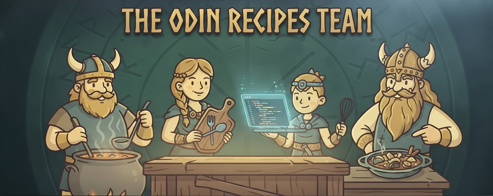

Our Mission: Odin Recipes brings the heart of traditional Norse cooking to your modern kitchen.
The Project: Created as a foundation for web development, this site serves as a platform to practice HTML, Git, and GitHub workflows.
Our Passion: We believe in the power of simple, authentic ingredients and the joy of sharing a good meal.